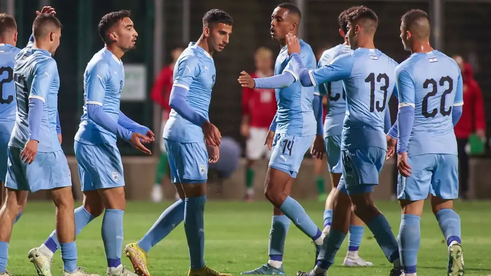

Pelatih Israel U-20: Akhirnya Piala Dunia Dipindah Dari Indonesia
Pelatih Israel U-20 Ofir Haim mengungkapkan kelegaannya dengan keputusan FIFA yang mencoret Indonesia sebagai tuan rumah Piala Dunia U-20 2023, dan berharap turnamen ini digelar di Argentina.
FIFA memutuskan mencoret Indonesia sebagai tuan rumah, menyusul adanya penolakan terhadap keikutsertaan Israel di Piala Dunia U-20, terkait hubungan diplomatik kedua negara. Hingga saat ini, FIFA belum menunjuk pengganti Indonesia.
Sejumlah negara digadang-gadang bakal menjadi pengganti Indonesia sebagai tuan rumah, yakni Argentina, Peru, dan Qatar. Haim mengungkapkan, ia memilih Argentina menjadi tuan rumah turnamen kelompok umur tersebut.
“Piala Dunia akhirnya dipindah dari Indoonesia, dan kami sekarang menunggu di mana turnamen ini akan digelar. Tapi di mana pun itu, kami akan datang membawa kehormatan nama negara,” ujar Haim dikutip laman Sport5.
“Jika saya harus memilih [negara pengganti Indonesia]? Argentina adalah tempat yang sangat ingin saya kunjungi. Saya tidak tahu apakah saya bisa ke sana tanpa sepakbola.”
Haim kini bisa sepenuhnya fokus menyiapkan tim menghadapi Piala Dunia U-20 setelah mereka gagal lolos ke putaran final grup elite Piala Eropa U-19 2022/23 di Malta. Israel harus puas menduduki peringkat dua klasemen akhir Grup 6 setelah hanya bermain imbang 1-1 melawan Latvia di laga terakhir.
Haim menambahkan, meski hasil yang diperoleh mengecewakan, ia memberikan apresiasi terhadap performa tim. Menurutnya, sebagian besar pemain di turnamen ini akan mengisi skuad Israel di Piala Dunia U-20.
“Hari yang mengecewakan dan menyedihkan. Kami selangkah lagi untuk lolos ke [putaran final] Piala Eropa. Semua bergantung kepada kami, dan kami sudah merasa bagus bermain di kandang,” ucap Haim.
“Kami tidak bisa memaksimalkan peluang untuk mencetak gol, itu yang sangat menyakitkan. Tapi banyak pemain telah membuktikan diri mereka di turnamen ini. Saya meyakini akan banyak dari pemain di tim ini yang akan mewakili kami di Piala Dunia.”